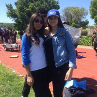

A single goat dramatically changed my life. My sister had discovered him on the side of the road. She brought him home and I have cherished him ever since. He is a major motivator in my life because he pushes me to strive. His name is Sonny because I consider him my son and I strive for him. He has all persuaded my career path. To take care of more animals like him. One day I would like to have a sanctuary for all times of animals and to foster many back to health.